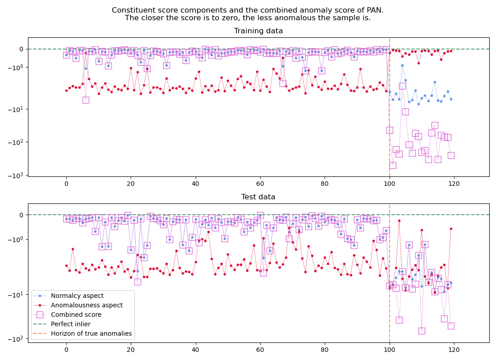

Note
Go to the end to download the full example code.
Plotting constituent and combined scoring of samples#
A chart of constituent score components and the combined scores of pan.pan.ParallelAnomalousNudge.
import numpy as np
from matplotlib import pyplot as plt
from pan import ParallelAnomalousNudge
RANDOM_SEED = 42
N_NORMAL = 100
N_ABNORMAL = 20
# Training data
np.random.seed(42)
# Generate normal samples
f1 = np.random.normal(loc=.06, scale=.002, size=N_NORMAL)
f2 = np.random.normal(loc=.075, scale=.002, size=N_NORMAL)
X_normal = np.vstack((f1, f2)).T
# Generate abnormal samples
f1_abn = np.random.normal(loc=.06, scale=.002, size=N_ABNORMAL) + np.random.uniform(0.005, 0.01, size=N_ABNORMAL)
f2_abn = np.random.normal(loc=.075, scale=.002, size=N_ABNORMAL) + np.random.uniform(0.005, 0.01, size=N_ABNORMAL)
X_abnormal = np.vstack((f1_abn, f2_abn)).T
X_train = np.vstack((X_normal, X_abnormal))
y_train = np.hstack((np.zeros(N_NORMAL), np.ones(N_ABNORMAL)))
# Test data
np.random.seed(84)
# Generate normal samples
f1 = np.random.normal(loc=.06, scale=.002, size=N_NORMAL)
f2 = np.random.normal(loc=.075, scale=.002, size=N_NORMAL)
X_normal = np.vstack((f1, f2)).T
# Generate abnormal samples
f1_abn = np.random.uniform(.06-0.015, .06+0.015, size=N_ABNORMAL)
f2_abn = np.random.uniform(.075-0.015, .075+0.015, size=N_ABNORMAL)
X_abnormal = np.vstack((f1_abn, f2_abn)).T
X_test = np.vstack((X_normal, X_abnormal))
y_test = np.hstack((np.zeros(N_NORMAL), np.ones(N_ABNORMAL)))
# Train model
estimator = ParallelAnomalousNudge(random_seed=RANDOM_SEED)
estimator.fit(X_train, y_train)
# Plot scores
fig, axes = plt.subplots(2, 1, figsize=(11, 8))
axes = axes.flatten()
ax = axes[0]
ax.set_title("Training data")
scores = estimator.score_samples(X_train)
combined_scores = estimator.combined_score_samples(X_train)
ax.plot(scores[:, 0], "--o", color="cornflowerblue", markersize=3, linewidth=.5, label="Normalcy aspect", zorder=3)
ax.plot(scores[:, 1], "--o", color="crimson", markersize=3, linewidth=.5, label="Anomalousness aspect", zorder=4)
ax.plot(combined_scores, "--s", color="orchid", markerfacecolor="none", markersize=10, linewidth=.5, label="Combined score", zorder=5)
ax.axhline(y=0, linestyle="dashed", color="seagreen", label="Perfect inlier", alpha=.8)
ax.axvline(x=N_NORMAL, linestyle="dashed", color="coral", label="Horizon of true anomalies", alpha=.8)
ax = axes[1]
ax.set_title("Test data")
scores = estimator.score_samples(X_test)
combined_scores = estimator.combined_score_samples(X_test)
ax.plot(scores[:, 0], "--o", color="cornflowerblue", markersize=3, linewidth=.5, label="Normalcy aspect", zorder=3)
ax.plot(scores[:, 1], "--o", color="crimson", markersize=3, linewidth=.5, label="Anomalousness aspect", zorder=4)
ax.plot(combined_scores, "--s", color="orchid", markerfacecolor="none", markersize=10, linewidth=.5, label="Combined score", zorder=5)
ax.axhline(y=0, linestyle="dashed", color="seagreen", label="Perfect inlier", alpha=.8)
ax.axvline(x=N_NORMAL, linestyle="dashed", color="coral", label="Horizon of true anomalies", alpha=.8)
for ax in axes:
ax.set_yscale("symlog")
ax.margins(.1)
plt.suptitle("Constituent score components and the combined anomaly score of PAN.\nThe closer the score is to zero, the less anomalous the sample is.")
plt.legend()
plt.tight_layout()
plt.show()

Total running time of the script: (0 minutes 0.971 seconds)